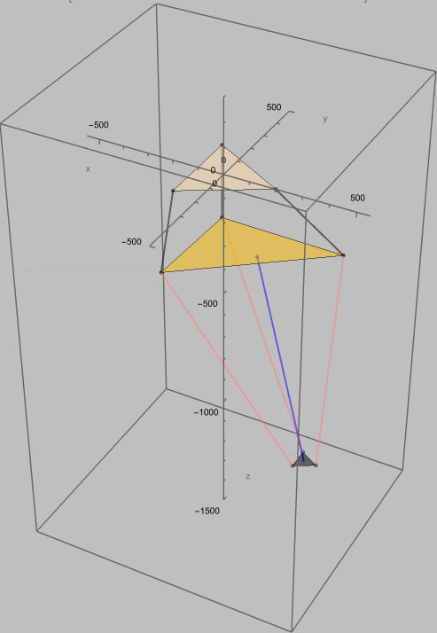
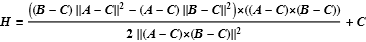
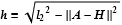
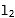
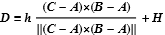

Closed form solution for direct and inverse kinematics of a delta robot

The task of the direct kinematics is to calculate the position of the end effector from the position of the joints.
The joints positions identifies the triad of points of the space (A, B, C), which is the base of a tetrahedron whose unknown vertex is the position of the end effector D.
The projection of D on the plane ABC is H.
H is found to be the center of the circle which circumscribes the triangle ABC.

The height of tetrahedron h is easily found by the Pythagorean theorem.

where 
The vector ortogonal to the plane ABC, starting from H and lengh h ends in D.

Ezio Galeazzi 2017